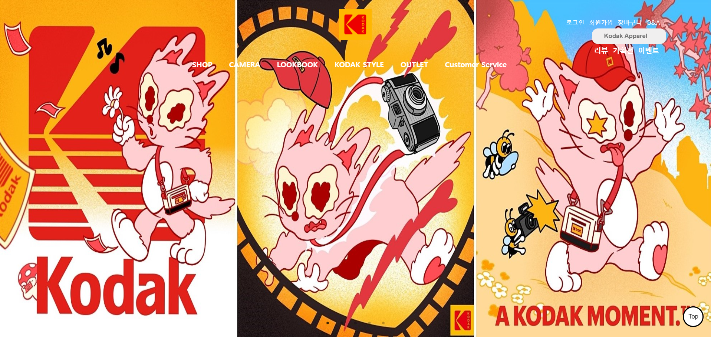

<!DOCTYPE html>
<html>
    <head>
        <meta charset="utf-8">
        <meta http-equiv="X-UA-Compatible" content="IE=edge">
        <meta name="viewport" content="width=device=width, initial-scale=1.0">
        <title>Portfolio_Kodak</title>
        <link rel="stylesheet" type="text/css" href="kodak.css">
    </head>
</html>
<body>
    <header>
        <div class="inner">
            <p class="name" onclick="location.href='index.html'" style="cursor: pointer;">Lee.GaHee</p>
            <div class="menu">
                <ul>
                    <li><a href="index.html">Home</a></li>
                    <li><a href="algorithm.html">Algorithm</a>
                        <div class="dropmenu">
                            <a href="imple.html">Implementation</a>
                            <a href="math.html">Mathematics</a>
                            <a href="dynamic.html">Dynamic.P</a>
                            <a href="graph.html">Graph</a>
                        </div>
                    </li>
                    <li><a href="profile.html">Profile</a></li>
                    <li><a href="portfolio.html">Portfolio</a></li>
                </ul>
            </div>
        </div> 
    </header>

    <section>
        <div class="top">ㅇ</div>
        <div class="container">
            <div class="title">
                <a href="portfolio.html"></a><h1>KODAK</h1>
                <p>KODAK 쇼핑몰을 구경할 수 있어요.</p>
            </div>

            <div class="detail">
                
                <div class="button">
                    <a href="https://gahee1907.github.io/Web_KODAK/index.html" target="_blank">VIEW</a>
                    <a style="background-color: #fbbb04;" href="https://hilightbrands-kodak.co.kr/" target="_blank">KODAK공식 홈페이지</a>
                </div>
                <article>
                    <p>130년의 시대를 초월하는 혁신과 스타일로 시장을 이끌던 코닥의 홈 페이지를 구성했습니다.<br><br></p>
                    <h2>[작업기능]</h2>
                    <p>
                        ▶ jquery.bxslider.js를 사용한 홈페이지의 첫 시작과 베스트 아이템, 신상품에 <strong>슬라이드</strong> 효과<br><br>
                        ▶ 마우스 아래로 스크롤 시 이미지와 메뉴의 겹쳐보이는 현상을 개선하기 위해 배경컬러 rgba(0, 0, 0, .8)으로 재선정<br><br>
                        ▶ 각 페이지 마다 오른쪽 하단에 자바스크립트를 통해 <strong>window.scrollTo()</strong><span>스크롤이동</span>으로 <strong>TOP 버튼</strong> 구성<br><br>
                        ▶ SHOP과 CAMERA페이지에 있던 필터메뉴가 상품의 시선을 빼앗는다고 판단하여 상단에 배치<br>
                        (필요시, TOP버튼을 통해 빠르게 찾을 수 있음)

                    </p>
                </article>
                <article>
                    <h2>[제작 페이지]</h2>
                    <p>index, Shop, Camera, Login, Customer Service 총 5페이지</p>   
                </article>
                <article>
                    <h2>[사용 툴]</h2>
                    <p>HTML, CSS, Javascript, Jquery, VS Code</p>   
                </article>
            </div>
        </div>
        
    </section>

    <footer>
        <div class="bottom">
            <h1>Lee.GaHee</h1>
            <ul>
                <li>Manseok-ro 159beon-gil, Jangan-gu, Suwon-si, Gyeonggi-do, Republic of Korea</li>
                <li>Tel: 010-3901-9410</li>
                <li>E-mail: rkgml10079@gmail.com</li>
            </ul>
        </div>
    </footer>
</body>